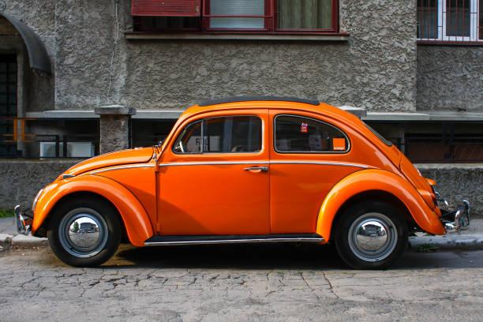
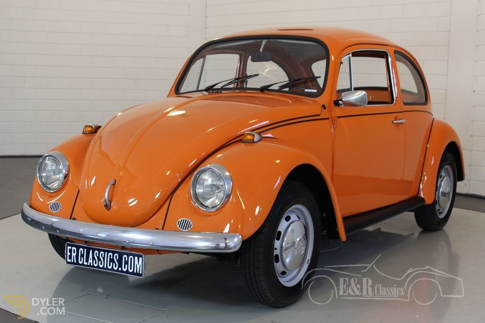
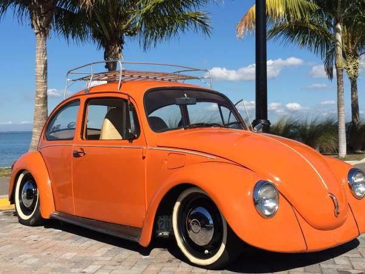
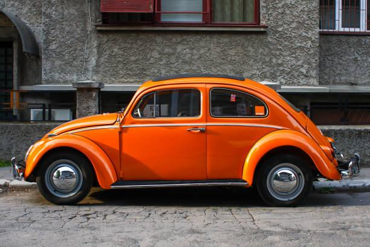
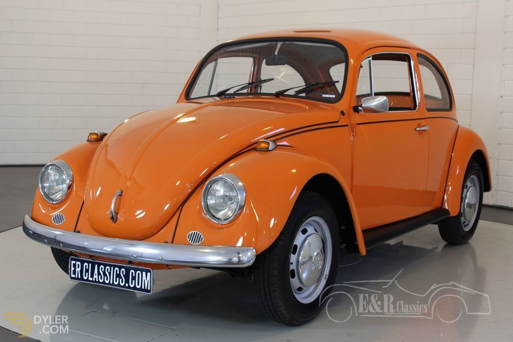
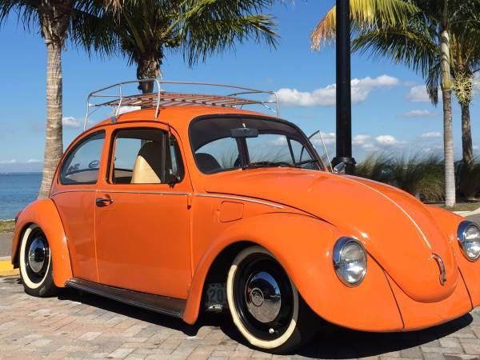

Volkswagen Beetle FOR SALE!
Vintage Volkswagen Beetle: The Iconic Classic Car
Overview
The Vintage Volkswagen Beetle is one of the most recognizable and beloved cars in automotive history. Originally designed in the 1930s, the Beetle quickly became a symbol of affordability and practicality. With its unique rounded shape and cheerful demeanor, the Beetle has captured the hearts of drivers around the world, making it a classic icon that transcends generations.
Performance and Features
Powered by a modest 1.2L flat-four engine, the Vintage Beetle produces around 30-50 horsepower, depending on the model year and specifications. While not designed for speed, the Beetle offers a delightful driving experience characterized by its light weight and simple mechanics. Its rear-engine layout and air-cooled design contribute to its distinctive driving feel, making it a favorite among enthusiasts and collectors.
Inside, the Vintage Beetle features a minimalist and functional interior, with simple controls and spacious seating. The retro design is charming and inviting, making it a comfortable car for both short trips and long drives. The large windows and compact dimensions enhance visibility, ensuring a pleasant driving experience.
Market Price
The market price for a Vintage Volkswagen Beetle varies widely based on condition, year, and modifications. Prices typically start around $10,000 for well-preserved models, while fully restored or rare variants can reach upwards of $30,000. In South Africa, you can expect prices to range from R150,000 to R500,000, depending on the specific vehicle's history and condition.
The Vintage Volkswagen Beetle is more than just a car; it’s a piece of automotive history that represents freedom, individuality, and joyful driving. Its timeless charm and enduring popularity make it a cherished classic for car lovers around the globe.